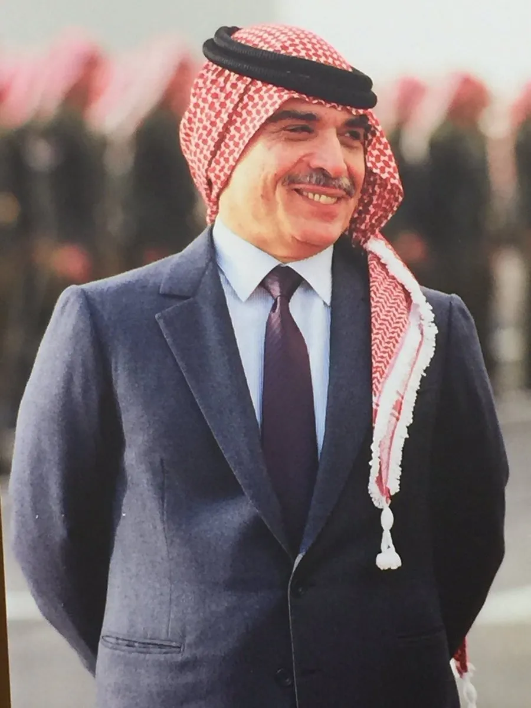
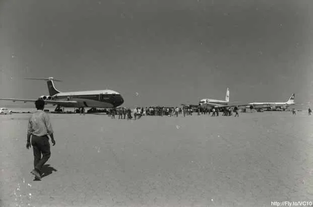

Dawson's Field Hijackings
September, 1970
LY219 etc.
From Tel Aviv etc.
To Amsterdam etc.
outline
사건명
PFLP 동시다발 하이재킹 사건
납치 항공편
엘알 219편 외 4개
출발지
텔 아비브 외 5곳
목적지
뉴욕, 런던
사건 발생지
요르단 도슨스 필드
범인
팔레스타인 인민해방전선
info
11970년 9월 6일 ~ 1970년 9월 9일에 PFLP
 팔레스타인의 공산주의 정당이자 무장단체이다.
가 일으킨 전 세계에서 동시다발적으로 일어난 하이재킹 사건이다. 당시 제1차 중동전쟁으로 인해 팔레스타인과 요르단, 특히 국왕인 후세인 1세
팔레스타인의 공산주의 정당이자 무장단체이다.
가 일으킨 전 세계에서 동시다발적으로 일어난 하이재킹 사건이다. 당시 제1차 중동전쟁으로 인해 팔레스타인과 요르단, 특히 국왕인 후세인 1세

요르단의 제3대 국왕이며 PFLP의 각종 범죄를 제지했다.
와의 관계가 악화되어있는 상태였다. 결국 1970년 9월 6일 뉴욕으로 가던 엘알 219편, TWA 741편, 스위스에어 100편, 팬암 93편이 PFLP 조직원에 의해 납치되었다. 그러나 엘알 219편은 이스라엘이 사복경찰을 배치해 조직원을 사살하거나 검거해 비상착륙하였다. TWA 741편, SR100편은 당시 요르단에 위치한 전 영국 공군기지인 도슨 공군기지

혁명공항이라는 명칭으로 불리며, 영국군이 철수하고 PFLP가 무단 접수해 기지로 활용하고 있었다.에 강제 착륙했다. 이 기지로 각국의 외신들이 모여들었고 PFLP 조직원들은 본인들의 요구를 들어주지 않을 시 항공기를 폭파하겠다고 협박했다. 이후 9월 7일, 인질 125명을 석방하고 스위스, 영국, 서독 등이 협상 테이블에 앉아 결국 9월 12일, 협상이 극적으로 타결되어 인질 전원이 석방되었다.
팔레스타인의 공산주의 정당이자 무장단체이다.

요르단의 제3대 국왕이며 PFLP의 각종 범죄를 제지했다.

혁명공항이라는 명칭으로 불리며, 영국군이 철수하고 PFLP가 무단 접수해 기지로 활용하고 있었다.